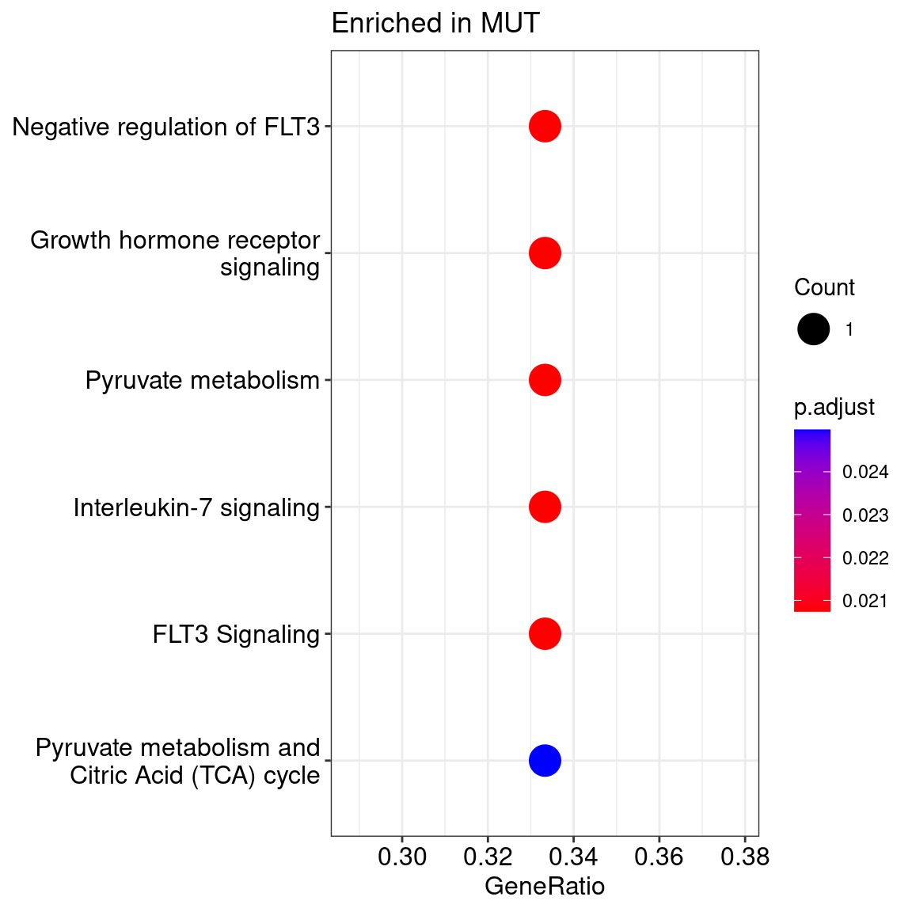
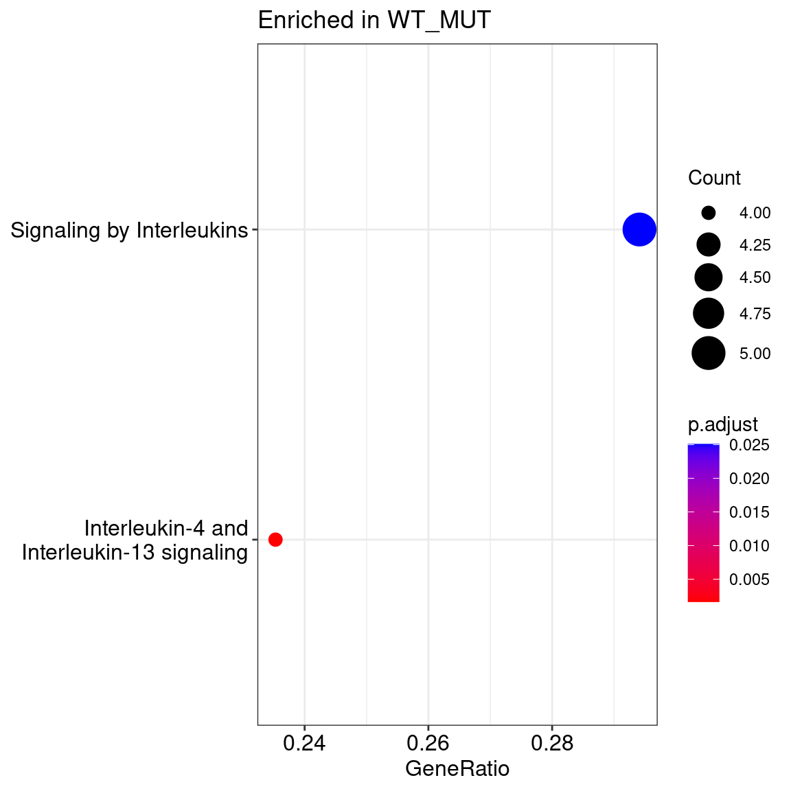
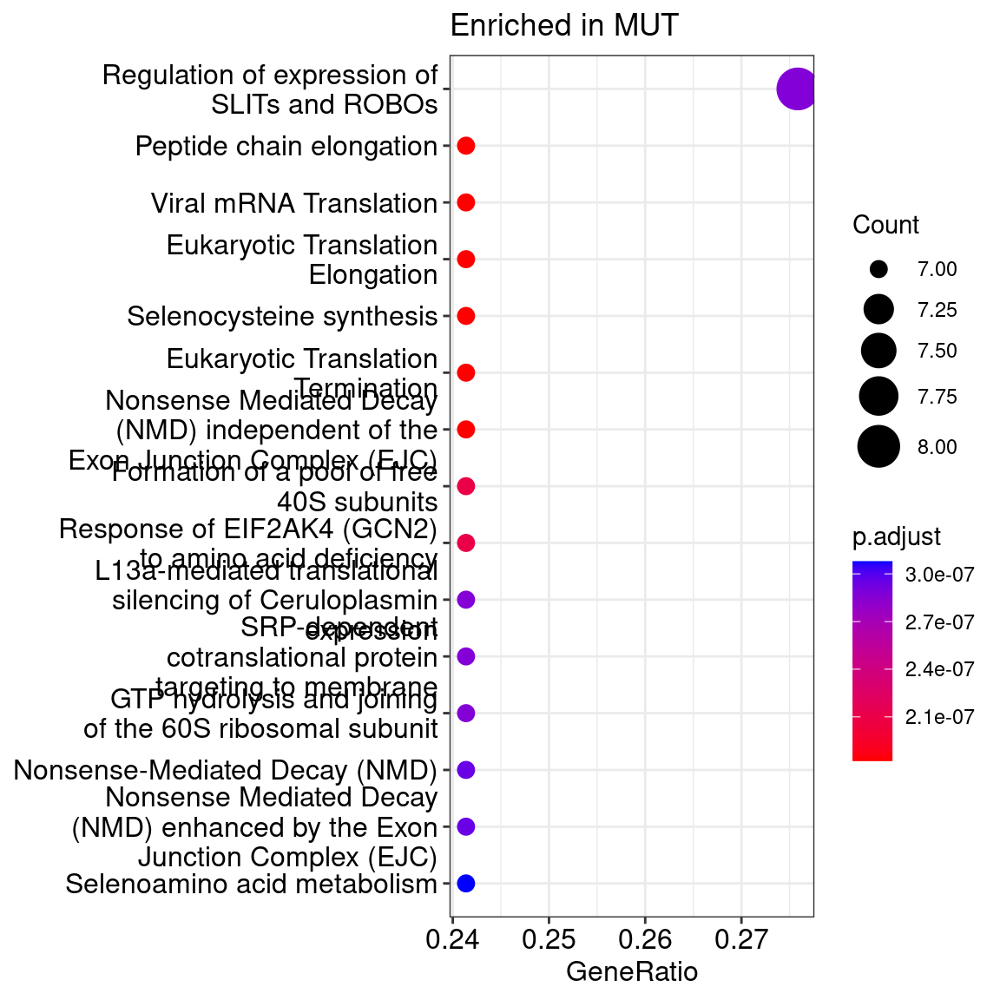
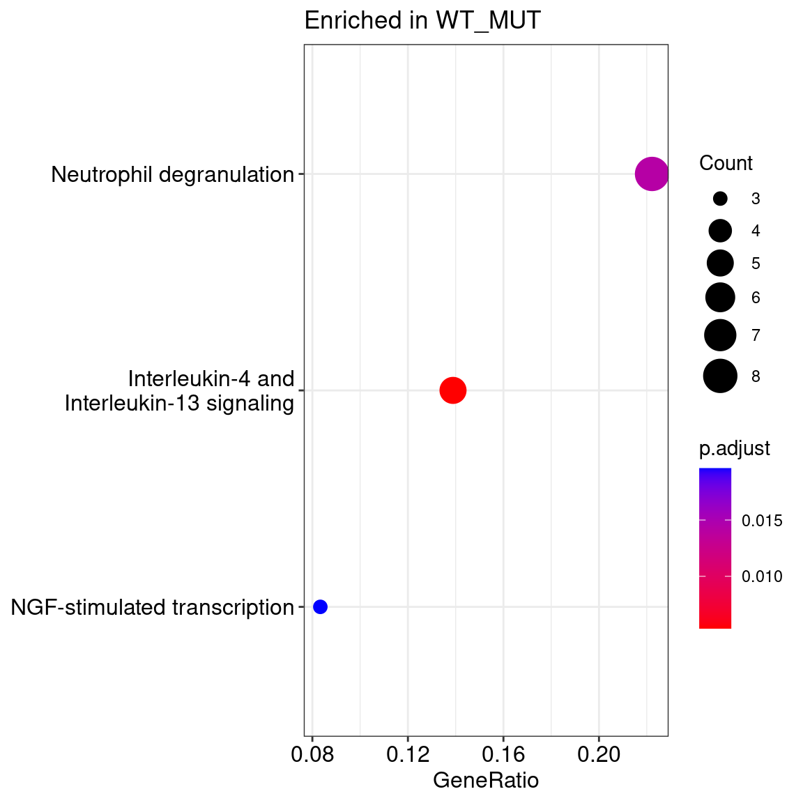
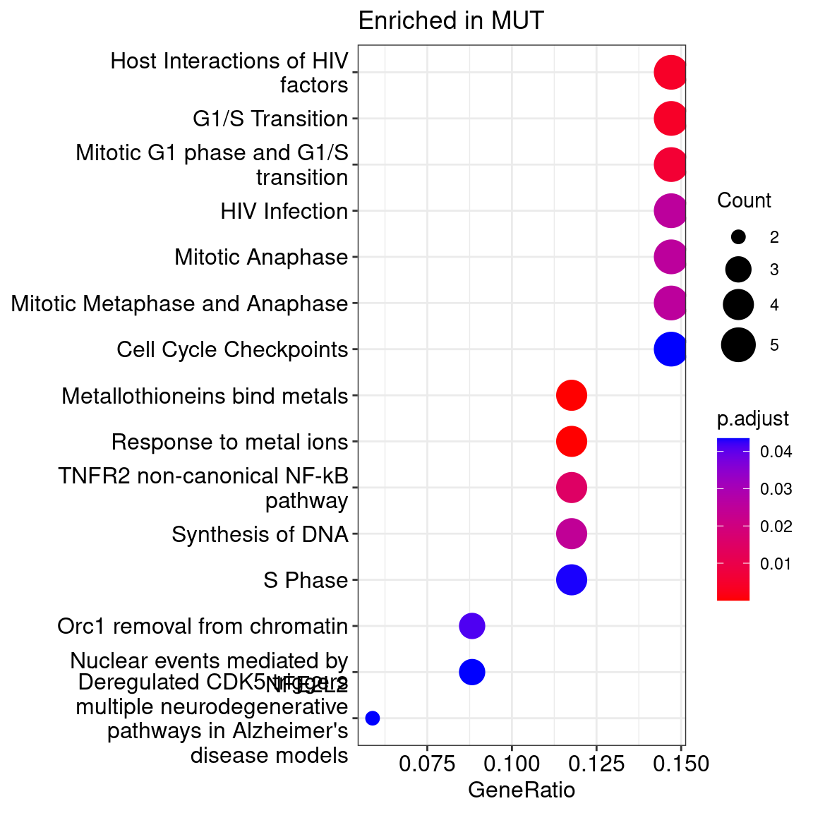
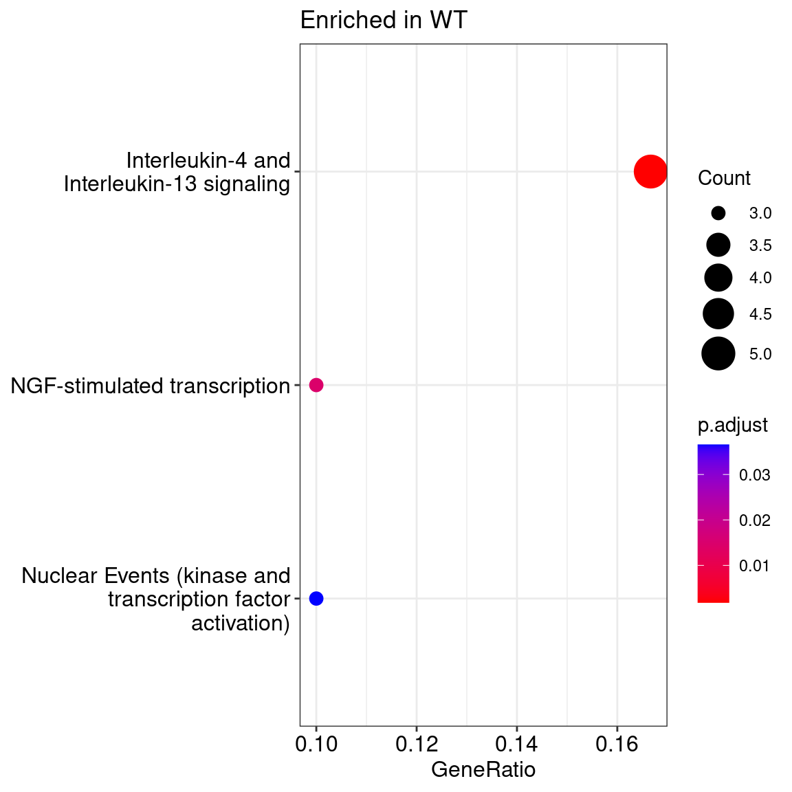

Last updated: 2024-10-23
Checks: 5 2
Knit directory: phenotype_genotype/
This reproducible R Markdown analysis was created with workflowr (version 1.7.1). The Checks tab describes the reproducibility checks that were applied when the results were created. The Past versions tab lists the development history.
Great! Since the R Markdown file has been committed to the Git repository, you know the exact version of the code that produced these results.
Great job! The global environment was empty. Objects defined in the global environment can affect the analysis in your R Markdown file in unknown ways. For reproduciblity it’s best to always run the code in an empty environment.
The command set.seed(20240315) was run prior to running
the code in the R Markdown file. Setting a seed ensures that any results
that rely on randomness, e.g. subsampling or permutations, are
reproducible.
Great job! Recording the operating system, R version, and package versions is critical for reproducibility.
To ensure reproducibility of the results, delete the cache directory
02_integration_phenotype_genotype_sAML1_cache and re-run
the analysis. To have workflowr automatically delete the cache directory
prior to building the file, set delete_cache = TRUE when
running wflow_build() or wflow_publish().
Using absolute paths to the files within your workflowr project makes it difficult for you and others to run your code on a different machine. Change the absolute path(s) below to the suggested relative path(s) to make your code more reproducible.
| absolute | relative |
|---|---|
| /hpcnfs/scratch/P_DIMA_SCMSEQ/analysis/scrnaseq/phenotype_genotype/src/functions.R | src/functions.R |
| /hpcnfs/scratch/P_DIMA_SCMSEQ/analysis/scrnaseq/phenotype_genotype/data/enrichment/sAML1.csv | data/enrichment/sAML1.csv |
| /hpcnfs/scratch/P_DIMA_SCMSEQ/analysis/scrnaseq/phenotype_genotype/data/01_tme_annotation.rds | data/01_tme_annotation.rds |
Great! You are using Git for version control. Tracking code development and connecting the code version to the results is critical for reproducibility.
The results in this page were generated with repository version 8cb6dcd. See the Past versions tab to see a history of the changes made to the R Markdown and HTML files.
Note that you need to be careful to ensure that all relevant files for
the analysis have been committed to Git prior to generating the results
(you can use wflow_publish or
wflow_git_commit). workflowr only checks the R Markdown
file, but you know if there are other scripts or data files that it
depends on. Below is the status of the Git repository when the results
were generated:
Ignored files:
Ignored: .Rproj.user/
Ignored: analysis/02_integration_phenotype_genotype_sAML1_cache/
Ignored: data/
Ignored: src/
Untracked files:
Untracked: phenotype_genotype.Rproj
Unstaged changes:
Modified: analysis/00_malignant_non_malignant_annotations.Rmd
Modified: analysis/01_tme_annotation.Rmd
Modified: analysis/index.Rmd
Note that any generated files, e.g. HTML, png, CSS, etc., are not included in this status report because it is ok for generated content to have uncommitted changes.
These are the previous versions of the repository in which changes were
made to the R Markdown
(analysis/02_integration_phenotype_genotype_sAML1.Rmd) and
HTML (docs/02_integration_phenotype_genotype_sAML1.html)
files. If you’ve configured a remote Git repository (see
?wflow_git_remote), click on the hyperlinks in the table
below to view the files as they were in that past version.
| File | Version | Author | Date | Message |
|---|---|---|---|---|
| Rmd | 8cb6dcd | Yinxiu Zhan | 2024-10-23 | Add sAML1 phenotype genotype analysis |
| html | 6a3773e | Yinxiu Zhan | 2024-10-21 | Build site. |
| Rmd | 72ca7dc | Yinxiu Zhan | 2024-10-21 | Add sAML1 phenotype genotype analysis |
The objective of the analysis is to integrate the genotype data from the enrichemnt experiment with the expression data. We start with sAML1.
The genotype data has been analyzed using NanoGen, a custom pipeline designed to call mutations from targeted enrichment data. NanoGen follows a multi-step process to ensure accurate mutation detection. It starts by using Blaze to identify cell barcodes, ensuring that each cell’s data is correctly assigned. It then collapses Unique Molecular Identifiers (UMIs) to eliminate PCR duplicates and other biases, allowing for a more accurate representation of the original sample.
One key feature of NanoGen is its ability to call consensus at the base level, rather than at the sequence level, providing a more precise identification of mutations. NanoGen applies a negative binomial model to distinguish between true mutated reads and background noise, improving the reliability of mutation calls. To address the issue of mutated allele dropout, NanoGen imposes a strict threshold: it requires at least five distinct wild-type (WT) UMIs for a cell to be confidently classified as wild-type (WT).
First, we identify and retain only mutations that overlap with the WES data. For each candidate mutation, we calculate its cellular fraction. Next, we filter out any genes with fewer than 50 genotyped cells.
Below, we present the correlation between the cellular fraction, defined as VAF * 2, in WES and the cellular fraction in the target enrichment. As demonstrated, the target enrichment effectively recapitulates the cellular fraction observed in WES.
Next, we quantified the number of cells with multiple genotyped mutations, as shown in the tables below. We present the results for different mutation combinations. For this specific samples, we will look at these genes since they are the most genotyped: RUNX1, SRSF2, IDH1, FLT3, CSF3R
We begin by analyzing the phenotype-genotype relationships using only cells with genotyped data for multiple genes. Specifically, we will focus on the following cases:
1- RUNX1 - IDH1 - FLT3
2- RUNX1 - SRSF2 - FLT3
The reason is that, for these combination, we have the highest number of genotyped cells for all genes.
For each case, we will examine the impact of adding mutations to the analysis.
Describing the mutations in the order RUNX1, IDH1, and FLT3, we observe the following cell counts: 26 cells with mutations in all three genes (MMM), 68 cells with mutations in RUNX1 and IDH1 but not FLT3 (MMW), and 17 cells with mutations only in RUNX1 (MWW).
We selected cells where FLT3 is either wild-type or mutated, while both IDH1 and RUNX1 are mutated. This resulted in the following number of cells, representing the intersection of genotyped cells and those passing scRNA-seq filters. The table below presents the number of cells in each compartment after filtering for cells with available RNA expression data. Since the majority of cells belong to the tumor compartment and only a small number are from the TME, we focused our analysis solely on the tumor compartment.
No genes were identified as significantly differentially expressed between the two conditions in the differential expression analysis, likely due to the low number of cells. As a result, we opted to forgo further comparisons, given the limited cell count.
Describing the mutations in the order RUNX1, SRSF2, and FLT3, we observe the following cell counts: 50 cells with mutations in all three genes (MMM), 77 cells with mutations in RUNX1 and IDH1 but not FLT3 (MMW), and 5 cells with mutations only in RUNX1 (MWW).
We selected cells where FLT3 is either wild-type or mutated, while both SRSF2 and RUNX1 are mutated. This resulted in the following number of cells, representing the intersection of genotyped cells and those passing scRNA-seq filters. The table below presents the number of cells in each compartment after filtering for cells with available RNA expression data. Since the majority of cells belong to the tumor compartment and only a small number are from the TME, we focused our analysis solely on the tumor compartment.
A single gene ‘MGST1’ has been identified as significantly differentially expressed between the two conditions in the differential expression analysis, likely due to the low number of cells. As a result, we opted to forgo further comparisons, given the limited cell count.
Given the low number of cells, requiring the genotype for all genes was not feasible. Therefore, we relaxed the genotype criteria and assumed that the cells acquire mutations in the following order:
RUNX1 -> SRSF2 -> FLT3
RUNX1 -> IDH1 -> FLT3
Therefore, to study the effect of acquiring FLT3 mutations, we can compare FLT3 MUT cells with the combined group of FLT3 WT + IDH1/SRSF2 MUT
We identified 269 cells with FLT3 mutations and 126 cells with FLT3 WT and SRSF2 mutations. The table below presents the number of cells in each compartment after filtering for cells with available RNA expression data. Since the majority of cells belong to the tumor compartment and only a small number are from the TME, we focused our analysis solely on the tumor compartment.
We conducted differential gene expression analysis between the two groups and followed it with reactome pathway enrichment analysis. The dot plot below, along with the accompanying table, presents the enriched terms.
Enriched in FLT3 Mutated

| Version | Author | Date |
|---|---|---|
| 6a3773e | Yinxiu Zhan | 2024-10-21 |
Enriched in FLT3 WT + SRSF2 Mutated

| Version | Author | Date |
|---|---|---|
| 6a3773e | Yinxiu Zhan | 2024-10-21 |
We identified 269 cells with FLT3 mutations and 143 cells with FLT3 WT and IDH1 mutations. The table below presents the number of cells in each compartment after filtering for cells with available RNA expression data. Since the majority of cells belong to the tumor compartment and only a small number are from the TME, we focused our analysis solely on the tumor compartment.
We conducted differential gene expression analysis between the two groups and followed it with reactome pathway enrichment analysis. The dot plot below, along with the accompanying table, presents the enriched terms.
Enriched in FLT3 Mutated

| Version | Author | Date |
|---|---|---|
| 6a3773e | Yinxiu Zhan | 2024-10-21 |
Enriched in FLT3 WT + IDH1 Mutated

| Version | Author | Date |
|---|---|---|
| 6a3773e | Yinxiu Zhan | 2024-10-21 |
We identified 269 cells with FLT3 mutations and 610 cells with FLT3 WT. The table below presents the number of cells in each compartment after filtering for cells with available RNA expression data. Since the majority of cells belong to the tumor compartment and only a small number are from the TME, we focused our analysis solely on the tumor compartment.
We conducted differential gene expression analysis between the two groups and followed it with reactome pathway enrichment analysis. The dot plot below, along with the accompanying table, presents the enriched terms.
Enriched in FLT3 Mutated

| Version | Author | Date |
|---|---|---|
| 6a3773e | Yinxiu Zhan | 2024-10-21 |
Enriched in FLT3 WT

| Version | Author | Date |
|---|---|---|
| 6a3773e | Yinxiu Zhan | 2024-10-21 |
We identified 438 cells with IDH1 mutations and 148 cells with IDH1 WT. The table below presents the number of cells in each compartment after filtering for cells with available RNA expression data. Since the majority of cells belong to the tumor compartment and only a small number are from the TME, we focused our analysis solely on the tumor compartment.
No differenetially expressed genes have been detected
We identified 143 cells with IDH1 mutations and 33 cells with IDH1 WT in FLT3 WT condition. The table below presents the number of cells in each compartment after filtering for cells with available RNA expression data. Since the majority of cells belong to the tumor compartment and only a small number are from the TME, we focused our analysis solely on the tumor compartment.
No differentially expressed genes have been detected
We identified 459 cells with SRSF2 mutations and 60 cells with IDH1 WT. The table below presents the number of cells in each compartment after filtering for cells with available RNA expression data. Since the majority of cells belong to the tumor compartment and only a small number are from the TME, we focused our analysis solely on the tumor compartment.
No differenetially expressed genes have been detected
We identified 126 cells with SRSF2 mutations and 12 cells with IDH1 WT. The table below presents the number of cells in each compartment after filtering for cells with available RNA expression data. Since the majority of cells belong to the tumor compartment and only a small number are from the TME, we focused our analysis solely on the tumor compartment.
No differentially expressed genes have been detected
R version 4.3.1 (2023-06-16)
Platform: x86_64-pc-linux-gnu (64-bit)
Running under: Ubuntu 22.04.3 LTS
Matrix products: default
BLAS: /usr/lib/x86_64-linux-gnu/openblas-pthread/libblas.so.3
LAPACK: /usr/lib/x86_64-linux-gnu/openblas-pthread/libopenblasp-r0.3.20.so; LAPACK version 3.10.0
locale:
[1] LC_CTYPE=en_US.UTF-8 LC_NUMERIC=C
[3] LC_TIME=en_US.UTF-8 LC_COLLATE=en_US.UTF-8
[5] LC_MONETARY=en_US.UTF-8 LC_MESSAGES=en_US.UTF-8
[7] LC_PAPER=en_US.UTF-8 LC_NAME=C
[9] LC_ADDRESS=C LC_TELEPHONE=C
[11] LC_MEASUREMENT=en_US.UTF-8 LC_IDENTIFICATION=C
time zone: Etc/UTC
tzcode source: system (glibc)
attached base packages:
[1] stats4 stats graphics grDevices utils datasets methods
[8] base
other attached packages:
[1] ReactomePA_1.44.0 clusterProfiler_4.8.3 org.Hs.eg.db_3.17.0
[4] AnnotationDbi_1.62.2 IRanges_2.34.1 S4Vectors_0.38.1
[7] Biobase_2.60.0 BiocGenerics_0.46.0 plotly_4.10.2
[10] maftools_2.16.0 mclust_6.0.0 SeuratObject_4.1.3
[13] Seurat_4.3.0.1 lubridate_1.9.2 forcats_1.0.0
[16] stringr_1.5.0 dplyr_1.1.3 purrr_1.0.2
[19] readr_2.1.4 tidyr_1.3.0 tibble_3.2.1
[22] ggplot2_3.4.2 tidyverse_2.0.0
loaded via a namespace (and not attached):
[1] RcppAnnoy_0.0.21 splines_4.3.1 later_1.3.1
[4] ggplotify_0.1.2 bitops_1.0-7 polyclip_1.10-4
[7] graph_1.78.0 lifecycle_1.0.3 rprojroot_2.0.3
[10] globals_0.16.2 lattice_0.21-8 MASS_7.3-60
[13] crosstalk_1.2.0 magrittr_2.0.3 limma_3.56.2
[16] sass_0.4.7 rmarkdown_2.24 jquerylib_0.1.4
[19] yaml_2.3.7 httpuv_1.6.11 sctransform_0.3.5
[22] sp_2.0-0 spatstat.sparse_3.0-2 reticulate_1.32.0
[25] cowplot_1.1.1 pbapply_1.7-2 DBI_1.1.3
[28] RColorBrewer_1.1-3 abind_1.4-5 zlibbioc_1.46.0
[31] Rtsne_0.16 ggraph_2.1.0 RCurl_1.98-1.12
[34] yulab.utils_0.0.9 rappdirs_0.3.3 tweenr_2.0.2
[37] git2r_0.32.0 GenomeInfoDbData_1.2.10 enrichplot_1.20.1
[40] ggrepel_0.9.3 irlba_2.3.5.1 listenv_0.9.0
[43] spatstat.utils_3.0-3 tidytree_0.4.5 reactome.db_1.84.0
[46] goftest_1.2-3 spatstat.random_3.1-6 fitdistrplus_1.1-11
[49] parallelly_1.36.0 leiden_0.4.3 codetools_0.2-19
[52] DT_0.29 ggforce_0.4.1 DOSE_3.26.1
[55] DNAcopy_1.74.1 tidyselect_1.2.0 aplot_0.2.0
[58] farver_2.1.1 viridis_0.6.4 matrixStats_1.0.0
[61] spatstat.explore_3.2-3 jsonlite_1.8.7 tidygraph_1.2.3
[64] ellipsis_0.3.2 progressr_0.14.0 ggridges_0.5.4
[67] survival_3.5-5 tools_4.3.1 treeio_1.24.3
[70] ica_1.0-3 Rcpp_1.0.11 glue_1.6.2
[73] gridExtra_2.3 xfun_0.40 qvalue_2.32.0
[76] GenomeInfoDb_1.36.3 withr_2.5.0 fastmap_1.1.1
[79] fansi_1.0.4 digest_0.6.33 gridGraphics_0.5-1
[82] timechange_0.2.0 R6_2.5.1 mime_0.12
[85] colorspace_2.1-0 scattermore_1.2 GO.db_3.17.0
[88] tensor_1.5 spatstat.data_3.0-1 RSQLite_2.3.1
[91] utf8_1.2.3 generics_0.1.3 data.table_1.14.8
[94] graphlayouts_1.0.0 httr_1.4.7 htmlwidgets_1.6.2
[97] scatterpie_0.2.1 graphite_1.46.0 whisker_0.4.1
[100] uwot_0.1.16 pkgconfig_2.0.3 gtable_0.3.4
[103] blob_1.2.4 workflowr_1.7.1 lmtest_0.9-40
[106] XVector_0.40.0 shadowtext_0.1.2 htmltools_0.5.6
[109] fgsea_1.26.0 scales_1.2.1 png_0.1-8
[112] ggfun_0.1.2 knitr_1.44 rstudioapi_0.15.0
[115] tzdb_0.4.0 reshape2_1.4.4 nlme_3.1-162
[118] cachem_1.0.8 zoo_1.8-12 KernSmooth_2.23-22
[121] parallel_4.3.1 miniUI_0.1.1.1 HDO.db_0.99.1
[124] pillar_1.9.0 grid_4.3.1 vctrs_0.6.3
[127] RANN_2.6.1 promises_1.2.1 xtable_1.8-4
[130] cluster_2.1.4 evaluate_0.21 cli_3.6.1
[133] compiler_4.3.1 rlang_1.1.1 crayon_1.5.2
[136] future.apply_1.11.0 labeling_0.4.3 plyr_1.8.8
[139] fs_1.6.3 stringi_1.7.12 viridisLite_0.4.2
[142] deldir_1.0-9 BiocParallel_1.34.2 munsell_0.5.0
[145] Biostrings_2.68.1 lazyeval_0.2.2 spatstat.geom_3.2-5
[148] GOSemSim_2.26.1 Matrix_1.5-3 hms_1.1.3
[151] patchwork_1.1.3 bit64_4.0.5 future_1.33.0
[154] KEGGREST_1.40.0 shiny_1.7.5 highr_0.10
[157] ROCR_1.0-11 igraph_1.4.3 memoise_2.0.1
[160] bslib_0.5.1 ggtree_3.8.2 fastmatch_1.1-4
[163] bit_4.0.5 downloader_0.4 gson_0.1.0
[166] ape_5.7-1